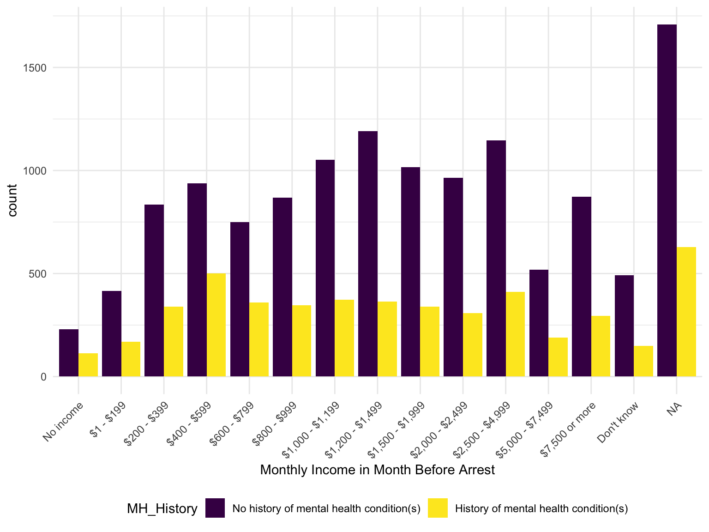

Exploratory Data Analysis
Demographics
#Table 1
table1(~ V0005 + AGE_CAT + V2982 | MENTAL_HISTORY_BINARY, data = total_df, overall = "Total")| No history of mental health condition(s) (N=12997) |
History of mental health condition(s) (N=4884) |
Total (N=17881) |
|
|---|---|---|---|
| Sex | |||
| Male | 10898 (83.9%) | 3157 (64.6%) | 14055 (78.6%) |
| Female | 2099 (16.1%) | 1727 (35.4%) | 3826 (21.4%) |
| Age Group | |||
| < 25 yrs | 2027 (15.6%) | 741 (15.2%) | 2768 (15.5%) |
| 25-34 | 4409 (33.9%) | 1552 (31.8%) | 5961 (33.3%) |
| 35-44 | 3930 (30.2%) | 1623 (33.2%) | 5553 (31.1%) |
| 45-54 | 1891 (14.5%) | 756 (15.5%) | 2647 (14.8%) |
| 55-64 | 597 (4.6%) | 182 (3.7%) | 779 (4.4%) |
| 65-96 | 143 (1.1%) | 30 (0.6%) | 173 (1.0%) |
| Unknown | 0 (0%) | 0 (0%) | 0 (0%) |
| Race/Ethnicity | |||
| White non-Hispanic | 3832 (29.5%) | 2456 (50.3%) | 6288 (35.2%) |
| Black non-Hispanic | 5691 (43.8%) | 1403 (28.7%) | 7094 (39.7%) |
| Hispanic | 2727 (21.0%) | 647 (13.2%) | 3374 (18.9%) |
| American Indian, Alaska Native non-Hispanic | 243 (1.9%) | 97 (2.0%) | 340 (1.9%) |
| Asian, Pacific Islander, Native Hawaiian non-Hispanic | 162 (1.2%) | 34 (0.7%) | 196 (1.1%) |
| Multiple Races reported, non-Hispanic | 321 (2.5%) | 240 (4.9%) | 561 (3.1%) |
| Missing | 21 (0.2%) | 7 (0.1%) | 28 (0.2%) |
#BAR GRAPH FOR EDUCATION
total_df %>%
group_by(EDUCATION, MENTAL_HISTORY_BINARY) %>%
summarize(count = n()) %>%
mutate(
EDUCATION = fct_reorder(EDUCATION, count)) %>%
rename(MH_History = MENTAL_HISTORY_BINARY) %>%
ungroup() %>%
ggplot(aes(x = EDUCATION, y = count, fill = MH_History)) +
geom_bar(position = "dodge", stat = "identity") +
theme(axis.text.x = element_text(angle=45, hjust=1))## `summarise()` has grouped output by 'EDUCATION'. You can override using the
## `.groups` argument.#BAR GRAPH FOR SES_INCOMEMTH
total_df %>%
group_by(SES_INCOMEMTH, MENTAL_HISTORY_BINARY) %>%
summarize(count = n()) %>%
mutate(
SES_INCOMEMTH = fct_reorder(SES_INCOMEMTH, count)) %>%
rename(MH_History = MENTAL_HISTORY_BINARY) %>%
ungroup() %>%
ggplot(aes(x = SES_INCOMEMTH, y = count, fill = MH_History)) +
geom_bar(position = "dodge", stat = "identity") +
theme(axis.text.x = element_text(angle=45, hjust=1))## `summarise()` has grouped output by 'SES_INCOMEMTH'. You can override using the
## `.groups` argument.
HIV
Our initial interest was in HIV prevalence and predictors in the prison system. We performed some exploratory analyses:
state_df %>%
group_by(MCMH_RSLT_HIV)%>%
summarise(count = n()) %>%
mutate(percent = (count / sum(count))) %>%
knitr::kable()| MCMH_RSLT_HIV | count | percent |
|---|---|---|
| (0000001) At least one positive test | 193 | 0.0133113 |
| (0000002) At least one negative and the other unknown | 11399 | 0.7861922 |
| (9999999) Missing | 2907 | 0.2004966 |
Mental Health
#ever taken a medication for mental health
federal_df %>%
group_by(V2409) %>%
summarize(count = n()) %>%
knitr::kable()| V2409 | count |
|---|---|
| (1) Yes | 704 |
| (2) No | 2887 |
| (7) Don’t know | 9 |
| (8) Refused | 30 |
| NA | 56 |
federal_df %>%
group_by(V2409) %>%
summarize(n_obs = n()) %>%
mutate(
V2409 = fct_reorder(V2409, n_obs)) %>%
ungroup() %>%
ggplot(aes(x = V2409, y = n_obs, fill = V2409)) +
geom_bar(stat = "identity")# TAKEN MEDICATION FOR A MENTAL CONDITION SINCE ADMISSION
federal_df %>%
group_by(V2412) %>%
summarize(n_obs = n()) %>%
knitr::kable()| V2412 | n_obs |
|---|---|
| (1) Yes | 472 |
| (2) No | 232 |
| NA | 2982 |
federal_df %>%
group_by(V2412) %>%
summarize(n_obs = n()) %>%
drop_na() %>%
mutate(
V2412 = fct_reorder(V2412, n_obs)) %>%
ungroup() %>%
ggplot(aes(x = V2412, y = n_obs, fill = V2412)) +
geom_bar(stat = "identity")# Mental Hosp - year before arrest - MCMH_mhospyr from client
federal_df %>%
group_by(MCMH_MHOSPYR) %>%
summarize(n_obs = n()) %>%
knitr::kable()| MCMH_MHOSPYR | n_obs |
|---|---|
| (0000001) Yes, admitted to mental hospital during the 12 months before arrest | 67 |
| (0000002) No, was not admitted to mental hospital during the 12 months before arrest | 179 |
| (0000004) No, never admitted to stayed overnight at mental hospital | 3343 |
| (9999998) DK/refused | 41 |
| (9999999) Missing | 56 |
federal_df %>%
group_by(MCMH_MHOSPYR) %>%
summarize(n_obs = n()) %>%
filter(MCMH_MHOSPYR %in% c("(0000004) No, never admitted to stayed overnight at mental hospital","(0000001) Yes, admitted to mental hospital during the 12 months before arrest",
"(0000002) No, was not admitted to mental hospital during the 12 months before arrest")) %>%
drop_na() %>%
mutate(
MCMH_MHOSPYR = fct_reorder(MCMH_MHOSPYR, n_obs)) %>%
ungroup() %>%
ggplot(aes(x = MCMH_MHOSPYR, y = n_obs, fill = MCMH_MHOSPYR)) +
geom_bar(stat = "identity")
# Mental hosp - since admission - MCMH_mhospadm from client
federal_df %>%
group_by(MCMH_MHOSPADM) %>%
summarize(n_obs = n()) %>%
knitr::kable()| MCMH_MHOSPADM | n_obs |
|---|---|
| (0000001) Yes, admitted to mental hospital since admission | 69 |
| (0000002) No, was not admitted to mental hospital since admission | 178 |
| (0000004) No, never admitted to stayed overnight at mental hospital | 3343 |
| (9999998) DK/refused | 40 |
| (9999999) Missing | 56 |
federal_df %>%
group_by(MCMH_MHOSPADM) %>%
summarize(n_obs = n()) %>%
filter(!MCMH_MHOSPADM %in% c("(9999999) Missing","(9999998) DK/refused")) %>%
drop_na() %>%
mutate(
MCMH_MHOSPADM = fct_reorder(MCMH_MHOSPADM, n_obs)) %>%
ungroup() %>%
ggplot(aes(x = MCMH_MHOSPADM, y = n_obs, fill = MCMH_MHOSPADM)) +
geom_bar(stat = "identity")
# MH Treatment Continuation (one year prior to arrest and since admission)
state_tx = state_df %>%
group_by(MCMH_MH_TREATMENT_PA, MCMH_MH_TREATMENT_AD) %>%
summarize(n_obs = n()) %>%
mutate(
MCMH_MH_TREATMENT_PA = gsub(".* ", "", MCMH_MH_TREATMENT_PA),
MCMH_MH_TREATMENT_AD = gsub(".* ", "", MCMH_MH_TREATMENT_AD),
tx_pa_ad = str_c(MCMH_MH_TREATMENT_PA, '/',MCMH_MH_TREATMENT_AD)
) %>%
ungroup() %>%
mutate(
sum = sum(n_obs),
percent = (n_obs/sum) * 100 ) ## `summarise()` has grouped output by 'MCMH_MH_TREATMENT_PA'. You can override
## using the `.groups` argument.federal_tx = federal_df %>%
group_by(MCMH_MH_TREATMENT_PA, MCMH_MH_TREATMENT_AD) %>%
summarize(n_obs = n()) %>%
mutate(
MCMH_MH_TREATMENT_PA = gsub(".* ", "", MCMH_MH_TREATMENT_PA),
MCMH_MH_TREATMENT_AD = gsub(".* ", "", MCMH_MH_TREATMENT_AD),
tx_pa_ad = str_c(MCMH_MH_TREATMENT_PA, '/',MCMH_MH_TREATMENT_AD)
) %>%
ungroup() %>%
mutate(
sum = sum(n_obs),
percent = (n_obs/sum) * 100 ) ## `summarise()` has grouped output by 'MCMH_MH_TREATMENT_PA'. You can override
## using the `.groups` argument.colors <- c("State Prisons" = "blue", "Federal Prisons" = "red")
ggplot() +
geom_line(data = state_tx, aes(x = tx_pa_ad, y = percent, group = 1, color = "State Prisons")) +
geom_line(data = federal_tx, aes(x = tx_pa_ad, y = percent, group = 1, color = "Federal Prisons")) +
labs(
title = "Mental Health Treatment Continuation",
x = "1 Year Prior to Arrest/Since Admission",
y = "Percent (%) of Survey Respondents",
color = "Legend"
) +
scale_color_manual(values = colors)Associations Between HIV & Mental Health
#Overall
total_df %>%
group_by(MCMH_RSLT_HIV)%>%
summarise(count = n()) %>%
mutate(percent = (count / sum(count))) %>%
knitr::kable()| MCMH_RSLT_HIV | count | percent |
|---|---|---|
| (0000001) At least one positive test | 228 | 0.0127510 |
| (0000002) At least one negative and the other unknown | 14252 | 0.7970471 |
| (9999999) Missing | 3401 | 0.1902019 |
#Graph state vs. Prison
federal_bar =
federal_df %>%
group_by(MCMH_RSLT_HIV, MCMH_MENTAL_HISTORY)%>%
summarise(count = n()) %>%
mutate(percent = (count / sum(count))) %>%
filter(MCMH_RSLT_HIV != "(9999999) Missing",
MCMH_MENTAL_HISTORY == "(0000001) Yes") %>%
mutate(HIV_status = recode(MCMH_RSLT_HIV,
"(0000001) At least one positive test" = "Positive",
"(0000002) At least one negative and the other unknown" = "Negative")) %>%
ggplot(aes(x = HIV_status, y = percent)) +
geom_bar(stat = "identity", fill = "steelblue") +
labs(title="Federal",
x ="HIV Status", y = "Percent with Mental Health Disorder") +
ylim(0, 0.5)## `summarise()` has grouped output by 'MCMH_RSLT_HIV'. You can override using the
## `.groups` argument.state_bar =
state_df %>%
group_by(MCMH_RSLT_HIV, MCMH_MENTAL_HISTORY)%>%
summarise(count = n()) %>%
mutate(percent = (count / sum(count))) %>%
filter(MCMH_RSLT_HIV != "(9999999) Missing",
MCMH_MENTAL_HISTORY == "(0000001) Yes") %>%
mutate(HIV_status = recode(MCMH_RSLT_HIV,
"(0000001) At least one positive test" = "Positive",
"(0000002) At least one negative and the other unknown" = "Negative")) %>%
ggplot(aes(x = HIV_status, y = percent)) +
geom_bar(stat = "identity", fill = "red") +
labs(title="State",
x ="HIV Status", y = "Percent with Mental Health Disorder") +
ylim(0, 0.5)## `summarise()` has grouped output by 'MCMH_RSLT_HIV'. You can override using the
## `.groups` argument.#Mental Health Disorder Prevalence by HIV Status at the Federal & State Levels(2004)
federal_bar + state_bar